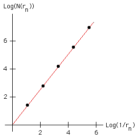

| Plotting the points | ||||||||||||||||||
| ||||||||||||||||||
| (the graph shows a greater range, and more widely spaced, points than these) we see they lie on a straight line of slope about 1.26. | ||||||||||||||||||
| So the box-counting dimension of the Koch curve is about 1.26. | ||||||||||||||||||
|  |
Return to Box-Counting Dimension of the Koch curve.